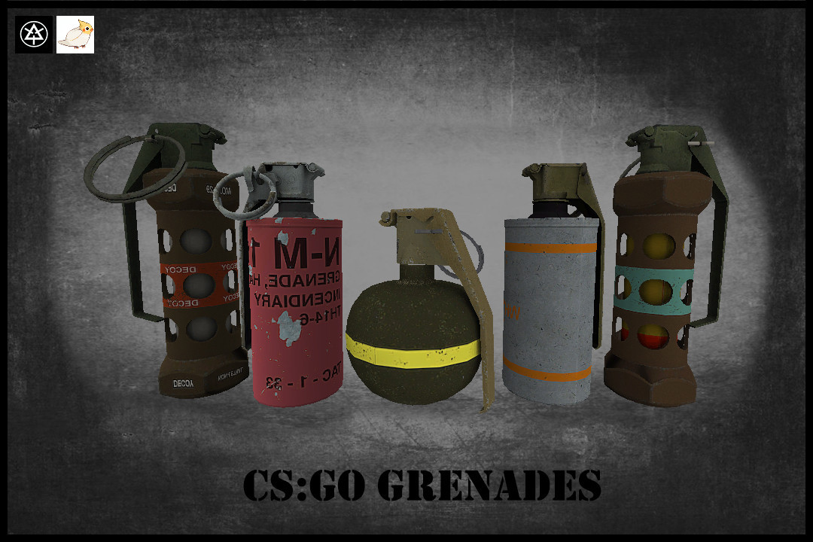
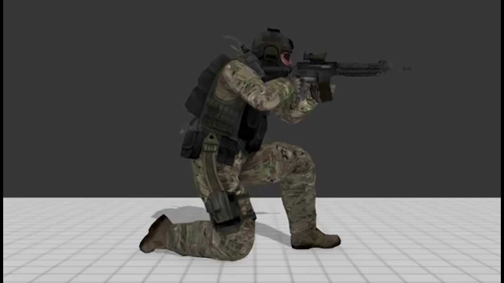
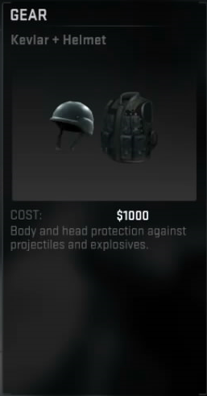

Teknikák, hogy hogyan játsz jobban
Ha lövünk gugoljunk le, ezáltal pontosabb lesz a fegyver!
Vegyünk gránátokat a kör elején, hogy meg tudjuk sebbezni, vakítani az ellenséget vagy akár valamilyen támadó helyet el füstölni.
Vegyünk páncélt a kevesebb sebbzés érdekében.



Legjobb fegyverek: